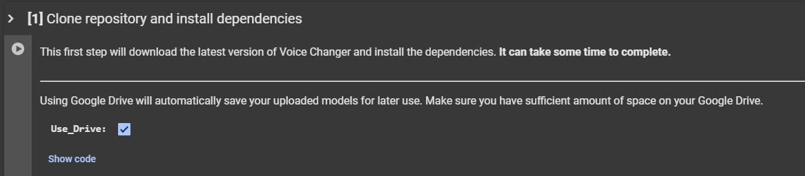
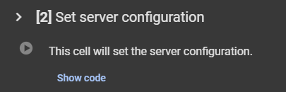
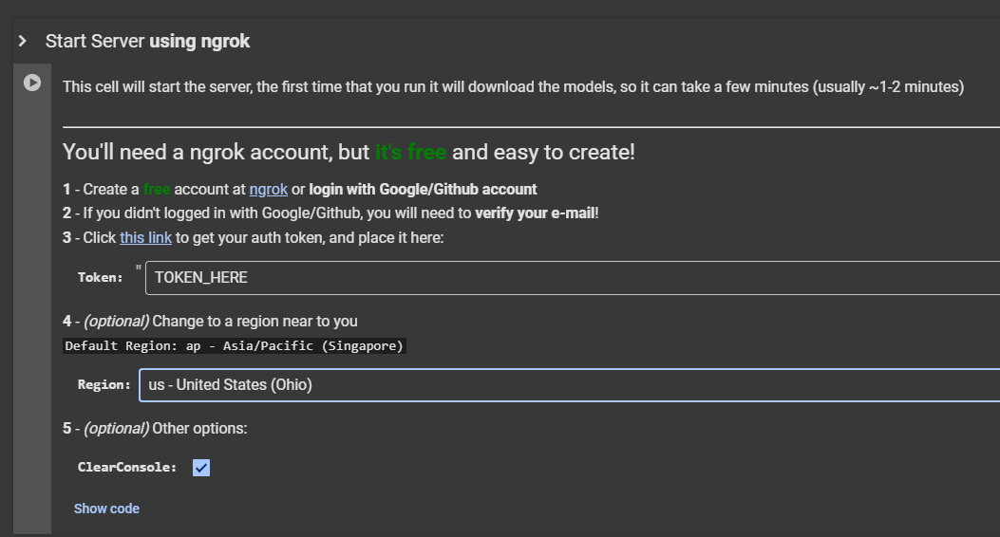
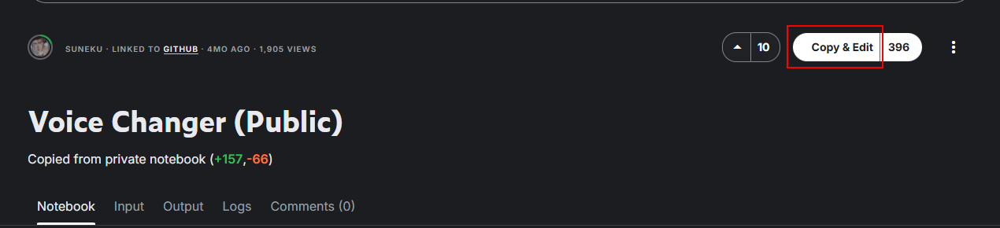
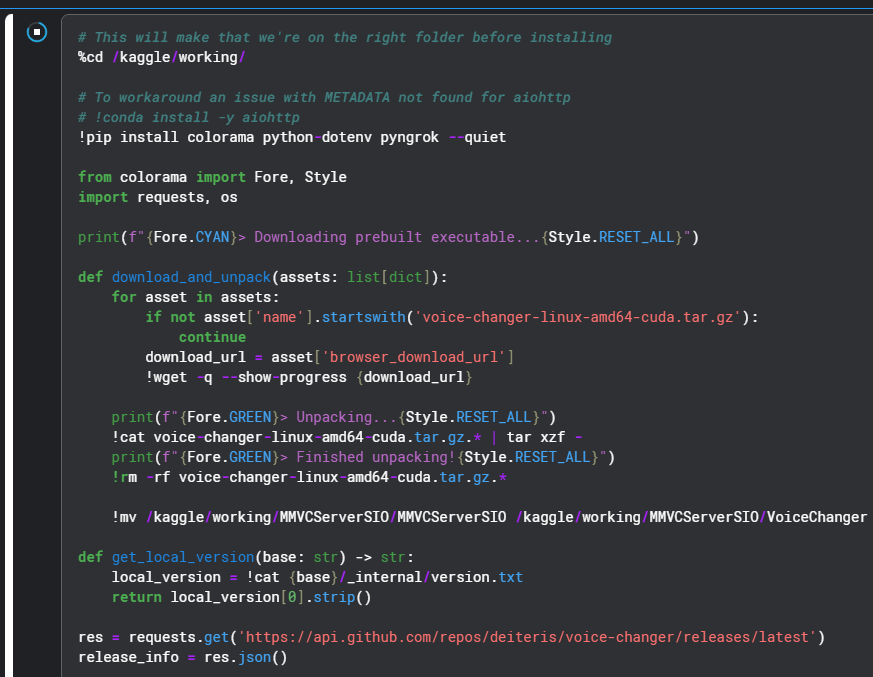
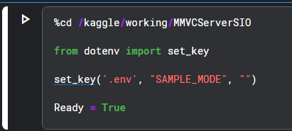
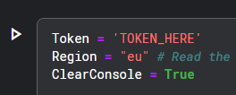

Deiteris' W Okada Fork Cloud
Last update: April 1, 2026
Introduction
- This is a cloud-based alternative to run Wokada Deiteris Fork, for users without a powerful local PC GPU, via Google Colab, Kaggle, or Lightning.AI.
Server Audio not available
"Server audio not available" is normal on cloud platforms as they have no physical sound card. Always use Client mode for audio input/output.
Virtual Audio Cable
A Virtual Audio Cable (VAC) is required to use the realtime voice changer on Discord & Games.
A VAC makes a virtual audio device, used to re-route audio between programs.
In this context, it allows you to set the AI Converted Voice Output as your input device in programs like Discord.
For Windows
Download VAC Lite (Virtual-Audio-Cable by Muzychenko).
Run
setup64if you are on a standard PC (Intel/AMD).Run
setup64aif you are on an ARM-based Windows Laptop (e.g., Snapdragon CPUs).After installation, it may change your default audio system. Click Yes when asked to open audio settings (or press WIN+R and type "mmsys.cpl"). Change your Recording and Playback devices back to your preferred default devices, and ensure they are also set as "Default Communication Devices."
For Mac
Download either: Blackhole Virtual Audio Cable or VB-Audio
For Linux
- Debian/Ubuntu:
sudo apt-get update && sudo apt-get install -y portaudio19-dev - Fedora/RHEL:
sudo yum install -y portaudio - Arch:
sudo pacman -Syu portaudio
Choose your Cloud Service
Set up the program using your preferred cloud service guide. Once configured, use the Public Tunnel URL to open the interface and continue with the next steps
Google Colab
Decent performance for standard use.
Kaggle
Generous free GPU quotas. Great alternative if Colab is limited.
Lightning.AI
Persistent storage and powerful GPUs.
Google Colab
Google Colab Service
Check the Google Colab Glossary for more info on Free Tier, Limits, Verification, Pricing and other things.
You need the Google Colab Paid Tier to run this, as it uses a Web UI; otherwise, you could risk getting disconnected or banned.
1. Access: Open the Deiteris Colab.
2. Install: Start from the top and run the first cell.

3. Second Cell: When it finishes (it will output
Done! Proceed with the next steps), run the second cell.
4. Ngrok: Scroll to the last cell, place your Ngrok token into the
TOKEN_HEREfield.
5. Launch: Run the cell. (Optional) Under the token field, you can change the region selection for lower latency. Once it finishes downloading, click the generated Ngrok link to start the Web UI.
Kaggle
Kaggle Service
Check the Kaggle Glossary for more info on Free Tier, Limits, Verification, Pricing and other things.
Account Setup
- Start by making an account here.

- Verify your account with a phone number. This is required to enable the "Internet" option in your notebooks, which is necessary for downloading models and dependencies.

Notebook Creation & Setup
Clone: Go to the realtime voice changer notebook and click "Copy and Edit".

Persistence: In the sidebar on the right, turn on Internet. Make sure persistence is set to Files and variables.

GPU: Turn on T4 x2 GPUs in the Accelerator settings.

Save: (Optional) Turn on "Save version" to save your progress.

Installation & Ngrok Setup
- Install: Starting from the top, run the first installation cell. When it outputs
Done! Proceed with the next steps, run the third cell.


- Ngrok: Scroll to the last cell, paste your token in the field, and run it to get your public URL.

Lightning.AI
Lightning.AI Service
Check the Lightning.AI Glossary for more info on Free Tier, Limits, Verification, Pricing and other things.
Create an Account
- First, make an account with Lightning Ai.

- Make sure you verify yourself with a phone number. Once you've done that you will get an email that looks like this:

Verification Time
You will need to wait 2-3 business days to become fully verified.
Studio: Clone the Wokada-Deiteris-Fork Studio.

GPU: Switch to a GPU environment (Studio Environment -> Switch To GPU).

Install: Run the first cell to install dependencies, and the second cell to configure the server.
Tunnels: In the third cell, choose your tunnel (Port Viewer recommended) and run it.
File Management: Use the Teamspace Drive button on the right sidebar to upload files.

Notebook: If you want to return to the code, click the Jupyter icon on the right.

Usage
Now that you have the Web UI running, the rest of the process is identical to using a local installation.
Troubleshooting
The web interface (client) is just a control panel; the actual voice conversion and backend processes happen on the server. If the cloud server crashes or fails to launch properly, you can enable Debug Mode to read the exact error logs directly in your notebook's output cell.
To do this, you need to append the --log-level debug argument to the command that launches the server.
- Scroll to the bottom of your notebook to find the cell that starts the server.
- Look for the execution command:
!./ML_Program - Add the debug flag to the end of the command so it looks like this:
!./ML_Program --log-level debug- Run the cell again.
- Locate the final cell in your notebook/studio that actually starts the server.
- Look for the execution command:
!./VoiceChanger - Add the debug flag to the end of the command so it looks like this:
!./VoiceChanger --log-level debug- Run the cell again.
The notebook output cell will now print detailed debug logs. If the server crashes, copy the text output from that cell. Save it to a .txt file, or paste it to a site like Pastebin to share with others when asking for support.
Other Log Levels
By default, the server runs on the info log level. While the server also supports warning, error, and critical levels, you should avoid using them for troubleshooting. They filter out background information, hiding the context developers need to figure out why your server crashed.
General Troubleshooting
Because the web interface and core server function the exact same way, most common errorsare identical to the local version.